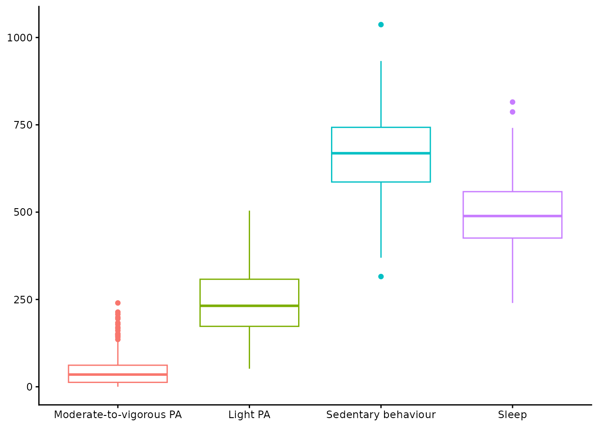
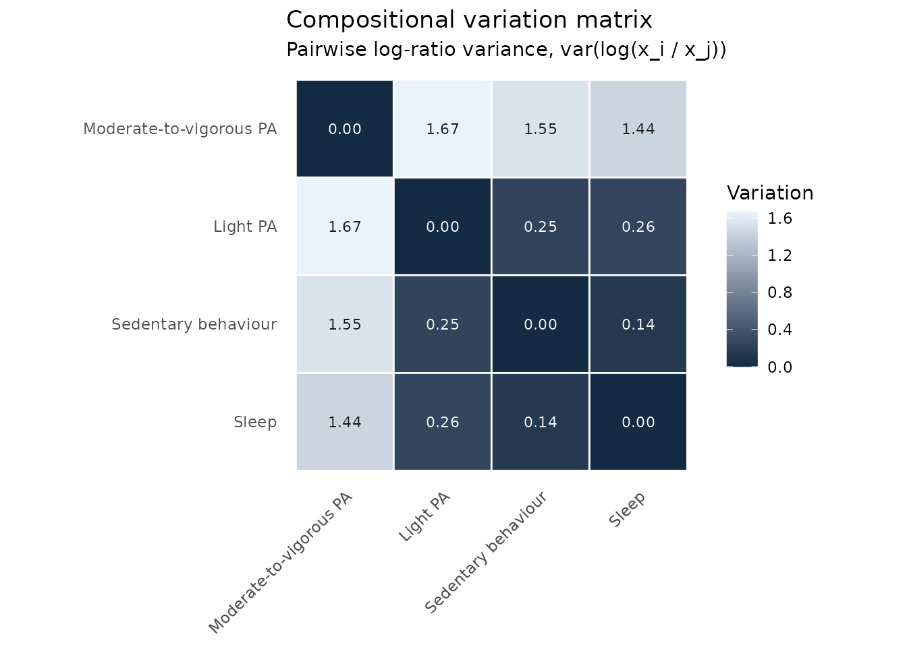
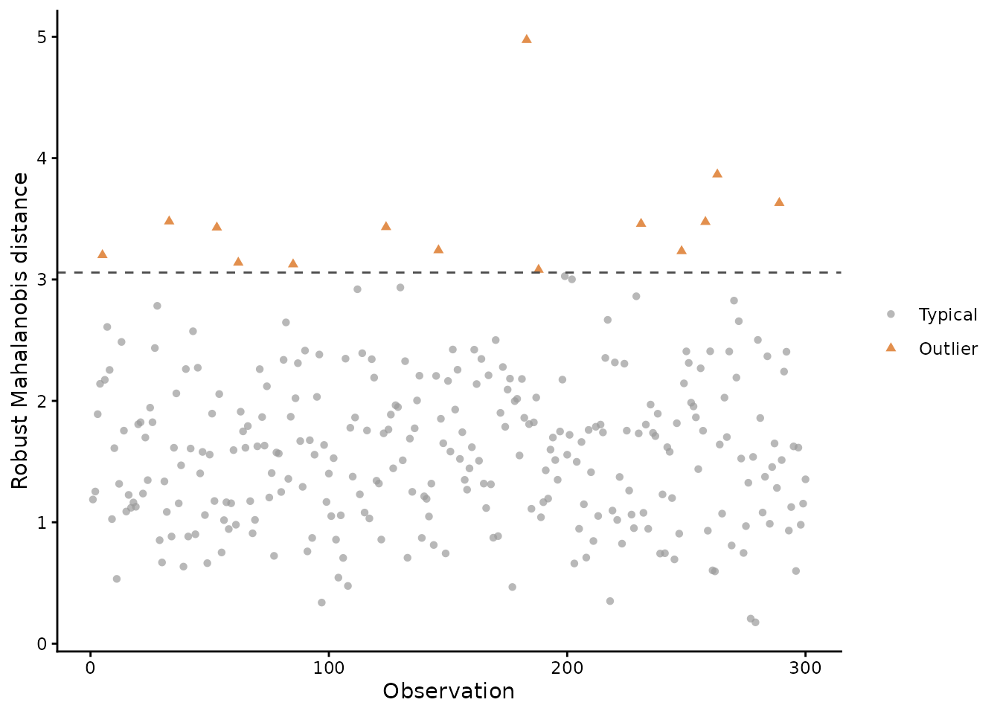
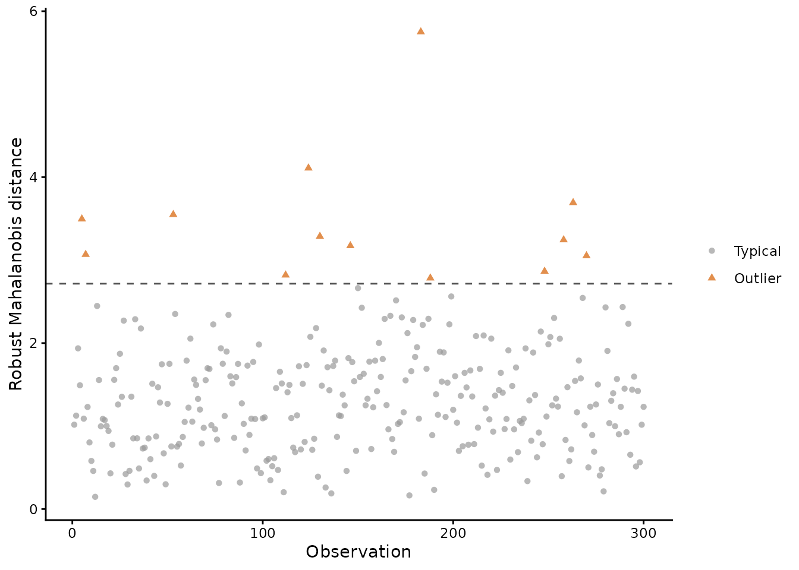

Working with a compositional variable
Source:vignettes/composition-variable.Rmd
composition-variable.RmdBefore fitting a compositional model, raw time-use columns need to be
validated, cleared of zeroes, screened for multivariate outliers, and
closed to a common total (Aitchison, 1986; Dumuid et al., 2020; Pedišić
et al., 2017). In timecoda,
declare_composition() handles these steps once and stores
the result in a compD object reused by every modelling and
plotting function.
Declaring and summarizing a composition
Using the four daily behaviours in timeuse
(MVPA, LPA, SB,
SPT), we declare a 1,440-minute composition with
multivariate outlier detection turned on. Because outlier detection
draws random subsets for the minimum covariance determinant (MCD)
estimator, we set a seed first:
set.seed(2828)
cd <- declare_composition(
data = timeuse,
parts = c("MVPA", "LPA", "SB", "SPT"),
closure = 1440,
labels = c(
MVPA = "Moderate-to-vigorous PA",
LPA = "Light PA",
SB = "Sedentary behaviour",
SPT = "Sleep"
),
impute_method = "lrEM",
detect_outliers = TRUE,
outlier_args = list(quantile = 0.975)
)
summary(object = cd)
#> <compD> compositional variable summary
#> Parts: Moderate-to-vigorous PA, Light PA, Sedentary behaviour, Sleep
#> Closure: 1440
#> Observations: 300
#>
#> Row totals (before closure): mean 1440.0 (SD 0.0), range 1440.0-1440.0
#> No zeroes detected.
#> Outliers flagged: 14 of 300 (4.7%) beyond the robust Mahalanobis cutoff 3.06 (chi-squared 0.975)
#>
#> Descriptive statistics
#> geom_mean: imputed, closed composition; other columns: original data
#> # A tibble: 4 × 10
#> part label geom_mean mean sd median p25 p75 min max
#> <chr> <chr> <dbl> <dbl> <dbl> <dbl> <dbl> <dbl> <dbl> <dbl>
#> 1 MVPA Moderate-to-vigoro… 28.1 45.9 44.7 35.0 12.7 61.8 0.1 240
#> 2 LPA Light PA 235. 243. 86.9 232. 173. 308. 51.8 504.
#> 3 SB Sedentary behaviour 677. 661. 118. 669. 586. 743. 316. 1037.
#> 4 SPT Sleep 499. 491. 106. 489. 426. 559. 240. 815.
#>
#> Variation matrix
#> # A tibble: 4 × 6
#> part label MVPA LPA SB SPT
#> <chr> <chr> <dbl> <dbl> <dbl> <dbl>
#> 1 MVPA Moderate-to-vigorous PA 0 1.67 1.55 1.44
#> 2 LPA Light PA 1.67 0 0.247 0.260
#> 3 SB Sedentary behaviour 1.55 0.247 0 0.140
#> 4 SPT Sleep 1.44 0.260 0.140 0In these data, raw row totals already sum to 1,440 minutes (no
rescaling was needed), and SB and SPT show the
smallest pairwise log-ratio variance (0.140), meaning their ratio is the
most stable across participants.
Behind the scenes, declare_composition() runs up to five
steps, three of which are also exported as standalone functions
(check_composition(), comp_impute(), and
comp_outliers()):

Handling zeroes
Zeroes in time-use recordings usually reflect rounded values below
device resolution rather than true structural absences. When zeroes are
present, declare_composition() imputes them on the original
unclosed scale via zCompositions (Palarea-Albaladejo &
Martín-Fernández, 2015), preserving raw row totals for models that use
them.
Because timeuse contains no zeroes, we set five
MVPA observations to zero and replace them using
multiplicative replacement ("multRepl"):
z <- timeuse
z$MVPA[1:5] <- 0
set.seed(1)
cd_z <- declare_composition(data = z, parts = c("MVPA", "LPA", "SB", "SPT"),
closure = 1440, impute_method = "multRepl")
summary(object = cd_z, var_matrix = FALSE)
#> <compD> compositional variable summary
#> Parts: MVPA, LPA, SB, SPT
#> Closure: 1440
#> Observations: 300
#>
#> Row totals (before closure): mean 1438.9 (SD 12.7), range 1245.2-1440.0
#> Zeroes detected: MVPA (5 of 300, 1.7%)
#> Zeroes imputed via multRepl
#>
#> Descriptive statistics
#> geom_mean: imputed, closed composition; other columns: original data
#> # A tibble: 4 × 10
#> part label geom_mean mean sd median p25 p75 min max
#> <chr> <chr> <dbl> <dbl> <dbl> <dbl> <dbl> <dbl> <dbl> <dbl>
#> 1 MVPA MVPA 25.4 44.8 44.0 33.8 12.0 61.1 0 240
#> 2 LPA LPA 236. 243. 86.9 232. 173. 308. 51.8 504.
#> 3 SB SB 678. 661. 118. 669. 586. 743. 316. 1037.
#> 4 SPT SPT 500. 491. 106. 489. 426. 559. 240. 815.By default, each part’s detection limit is its smallest observed
positive value, and replacements fall below that limit; if your
measuring instrument has a known threshold, pass it through
dl. The default impute_method = "lrEM" uses
log-ratio expectation-maximization to draw on the covariance of the
remaining parts, while "multRepl" is a simpler choice when
zeroes are rare. Three other zCompositions
methods—"lrDA" (data augmentation), "multLN"
(multiplicative lognormal), and "lrSVD" (singular value
decomposition)—are also available, with method-specific controls passed
via ....
Screening for simplex outliers
A participant can fall within the univariate range of every single
behaviour and still sit far from the sample centre in log-ratio space
(for instance, 14 hours of sleep paired with almost no
MVPA). Because regression models are fitted on ILR
coordinates, such observations can exert heavy leverage.
To flag these multivariate outliers, comp_outliers()
(triggered by detect_outliers = TRUE) computes robust
Mahalanobis distances in pivot ILR coordinates using the MCD estimator
and flags values exceeding the \sqrt{\chi^2_{D-1,\,q}} cutoff (Filzmoser
& Hron, 2008). Because this distance is affine-invariant, flags do
not depend on closure scale or part order (Egozcue et al., 2003;
Filzmoser et al., 2018). Raising quantile above the default
0.975 widens the cutoff and flags fewer observations:
set.seed(2828)
cd_strict <- declare_composition(data = timeuse,
parts = c("MVPA", "LPA", "SB", "SPT"),
closure = 1440, detect_outliers = TRUE,
outlier_args = list(quantile = 0.99))
summary(object = cd_strict, desc = FALSE, var_matrix = FALSE)
#> <compD> compositional variable summary
#> Parts: MVPA, LPA, SB, SPT
#> Closure: 1440
#> Observations: 300
#>
#> Row totals (before closure): mean 1440.0 (SD 0.0), range 1440.0-1440.0
#> No zeroes detected.
#> Outliers flagged: 8 of 300 (2.7%) beyond the robust Mahalanobis cutoff 3.37 (chi-squared 0.990)Flagged observations are never removed automatically, so row alignment with outcomes and covariates stays intact.
Diagnostic plots and publication tables
To explore the declared composition visually, plot()
draws five optional panels (histogram,
boxplot, ternary, variation, and
outliers) by default and returns them invisibly so you can
modify or subset them. We can inspect univariate distributions alongside
the variation-matrix heatmap by switching off the ternary and outlier
panels:
plot(x = cd, ternary = FALSE, outliers = FALSE)


With outlier detection enabled, we can also plot each participant’s robust Mahalanobis distance against the cutoff:
plot(x = cd, histogram = FALSE, boxplot = FALSE, ternary = FALSE,
variation = FALSE)
For D parts, plot()
draws \binom{D}{3} ternary projections.
Declaring a three-part subcomposition (MVPA,
LPA, SB) gives a single ternary projection,
drawn with the closed geometric mean marked by crosshairs and again with
the flagged outliers highlighted, beside the distance plot:
set.seed(1)
cd3 <- declare_composition(data = timeuse, parts = c("MVPA", "LPA", "SB"),
closure = 1440, detect_outliers = TRUE)
plot(x = cd3, histogram = FALSE, boxplot = FALSE, variation = FALSE)


To format the descriptive summary as a gt table for a
manuscript, pass it to pub_ready():
| Descriptive summary | |||
| Spread of the original data and the compositional centre per part | |||
| Part | Mean ± SD (original data) | Geometric mean (closed to 1440) | % of total |
|---|---|---|---|
| Moderate-to-vigorous PA | 45.9 ± 44.7 | 28.1 | 2.0 |
| Light PA | 242.6 ± 86.9 | 235.5 | 16.4 |
| Sedentary behaviour | 660.7 ± 117.6 | 677.2 | 47.0 |
| Sleep | 490.8 ± 106.2 | 499.2 | 34.7 |
Validation and closure scales
Before imputation or closure, check_composition() checks
that all declared parts exist, are numeric, have no missing values, and
contain no negative entries. You can also call
check_composition() directly during data cleaning and pass
total with a tolerance to catch incomplete accelerometer or
diary days.
Every downstream summary, plot, and reallocation shares the reporting
scale fixed by closure on the compD
object:
closure |
Reporting scale | Typical use |
|---|---|---|
1440 |
Minutes per day | 24-hour time-use compositions |
1 (default) |
Proportions | Unit simplex analysis |
100 or "percent"
|
Percentages | Percentage-of-day reporting |
"mean" |
Mean of observed row totals | Varying-duration records (e.g., waking wear time) |
For compositions whose row totals vary meaningfully between people,
declare closure = "mean" and include the total as a
covariate with include_total = TRUE in
comp_iv() (see
vignette("advanced-models", package = "timecoda")).
References
Aitchison, J. (1986). The Statistical Analysis of Compositional Data. Chapman & Hall.
Dumuid, D., Pedišić, Ž., Palarea-Albaladejo, J., Martín-Fernández, J. A., Hron, K., & Olds, T. (2020). Compositional data analysis in time-use epidemiology: What, why, how. International Journal of Environmental Research and Public Health, 17, 2220.
Egozcue, J. J., Pawlowsky-Glahn, V., Mateu-Figueras, G., & Barceló-Vidal, C. (2003). Isometric logratio transformations for compositional data analysis. Mathematical Geology, 35, 279-300.
Filzmoser, P., & Hron, K. (2008). Outlier detection for compositional data using robust methods. Mathematical Geosciences, 40, 233-248.
Filzmoser, P., Hron, K., & Templ, M. (2018). Applied Compositional Data Analysis: With Worked Examples in R. Springer.
Palarea-Albaladejo, J., & Martín-Fernández, J. A. (2015). zCompositions - R package for multivariate imputation of left-censored data under a compositional approach. Chemometrics and Intelligent Laboratory Systems, 143, 85-96.
Pedišić, Ž., Dumuid, D., & Olds, T. S. (2017). Integrating sleep, sedentary behaviour, and physical activity research in the emerging field of time-use epidemiology: Definitions, concepts, statistical methods, theoretical framework, and future directions. Kinesiology, 49, 252-269.
See also
vignette("timecoda", package = "timecoda"): getting started, with the whole workflow in one pass.vignette("composition-predictor", package = "timecoda"): modelling an outcome from the composition withcomp_iv().vignette("predicting-reallocations", package = "timecoda"): estimating the effect of moving time between parts.vignette("advanced-models", package = "timecoda"): the other model engines, the formula interface, moderation, and the total as a covariate.vignette("optimal-composition", package = "timecoda"): the search for the Goldilocks zone, the compositions with the best predicted outcome.